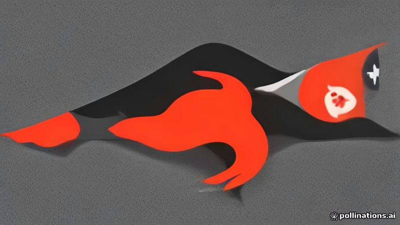

সরকার আওয়ামী লীগের সহিংসতাকে উসকানি বলে কঠোর পদক্ষেপে দেরি
Prothom Alo · 2026-11-20
AI-generated illustrationসরকার ও বিএনপি সূত্রের মতে, চলমান সহিংসতাকে উসকানি হিসেবে দেখা হচ্ছে, তাই তৎক্ষণাৎ কঠোর ব্যবস্থা নেওয়া হয়নি।
সরকারের দায়িত্বশীল একাধিক সূত্র, যার মধ্যে বিএনপির প্রতিনিধিরাও অন্তর্ভুক্ত, জানিয়েছে যে তারা আওয়ামী লীগের সাম্প্রতিক সহিংসতাকে উসকানি হিসেবে বিবেচনা করছে।
এই দৃষ্টিকোণ থেকে, কর্তৃপক্ষ এখনো আওয়ামী লীগের বিরুদ্ধে কঠোর পদক্ষেপ গ্রহণ করেনি এবং পরিস্থিতি সামাল দেওয়ার জন্য একটি পরিকল্পনা তৈরি করছে, যা তৎক্ষণাৎ কঠোর প্রয়োগের বদলে সমাধান খোঁজে।
Read the original reporting at the links above.
English version
Government cites Awami League violence as provocation, delays strict action
The government, according to multiple responsible sources from both the administration and the Bangladesh Nationalist Party, says it perceives recent violent incidents linked to the Awami League as a provocation.
Because of this view, authorities have not yet imposed stringent measures against the ruling party, and officials are reportedly formulating a plan that addresses the unrest without immediate harsh enforcement.